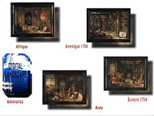
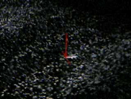

| electronic |
| home page |
|  | Knowbotic Research wurde fuer die Arbeit "Simulationsraum-Mosaik mobiler Datenklaenge" von der Prix Ars Electronica-Jury eine Goldene Nica in der Kategorie Interaktive Kunst zuerkannt. . Knowbotic Research Knowbotic Research Gruppe von Wissenschaftlern und Kuenstlern Abstract Knowbotic Research ist eine Gruppe von Medienkuenstlern und Wissenschaftlern, die Arbeiten im Spannungsfeld beider Disziplinen schaffen. 1962, freier Medienkuenstler, studierte an der Kunsthochschule fuer Medien, Koeln. Stipendiat verschiedener europaeischer Institutionen. |
|  |
|
Es werden einerseits die Grundelemente Newtonscher Partikelsysteme verwendet, jedoch folgt jede Partikel (Agent) ihren eigenen lokalen Regeln und besitzt eine eigene begrenzte Sicht von der Welt. . Die sich selbstorganisierenden Klangdaten innerhalb des knowbotic research-Projektes spiegeln die Konfrontation des alten mit dem neuen Weltbild wider. Es werden einerseits die Grundelemente Newtonscher Partikelsysteme verwendet, jedoch folgt jede Partikel (Agent) ihren eigenen lokalen Regeln und besitzt eine eigene begrenzte Sicht von der Welt. . |